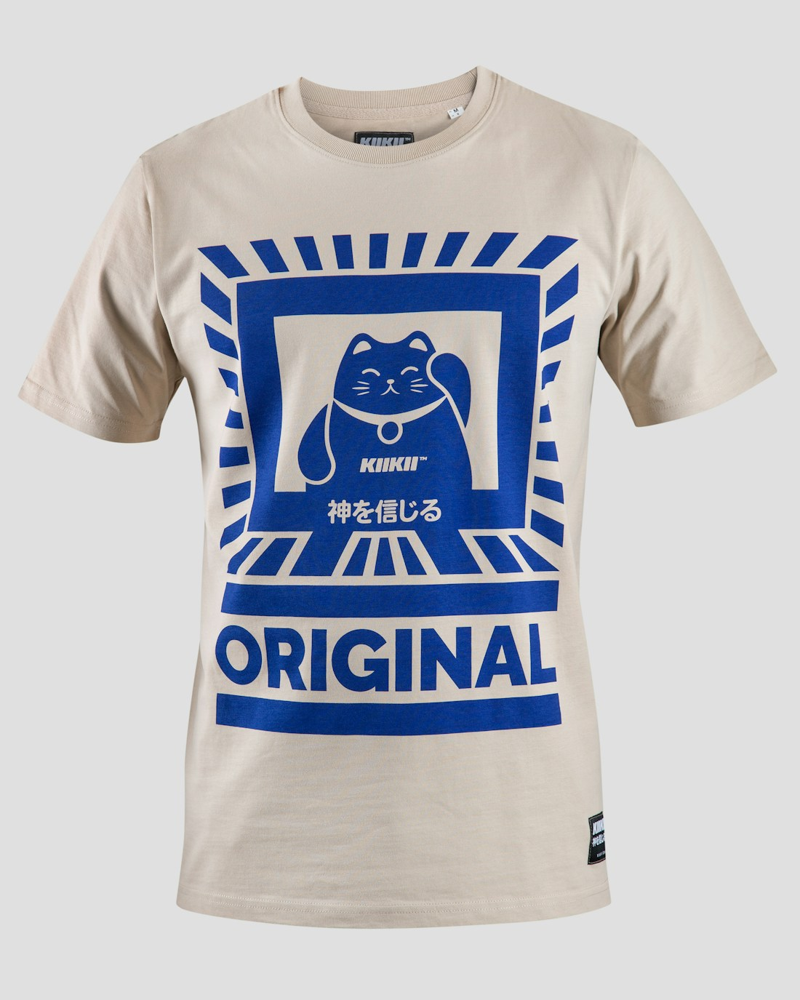

01Tejido de punto
↗Jersey, piqué y opciones a evaluar para cada proyecto.
02 — PRENDAS & MATERIALES
Evaluamos tus propuestas de tela y buscamos opciones acordes con el diseño y las especificaciones de tu pedido.

01Jersey, piqué y opciones a evaluar para cada proyecto.
 02
02Chompas con especial atención a la textura y los acabados.